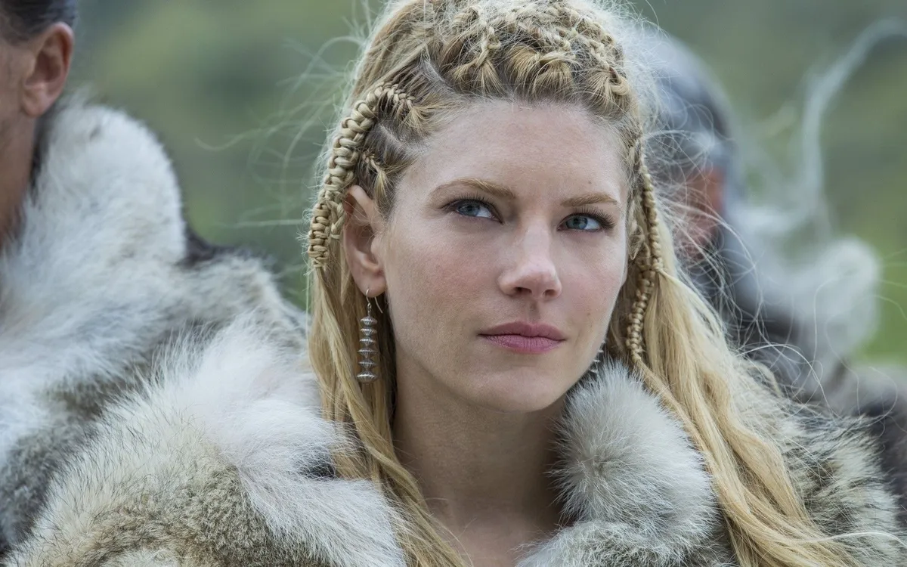
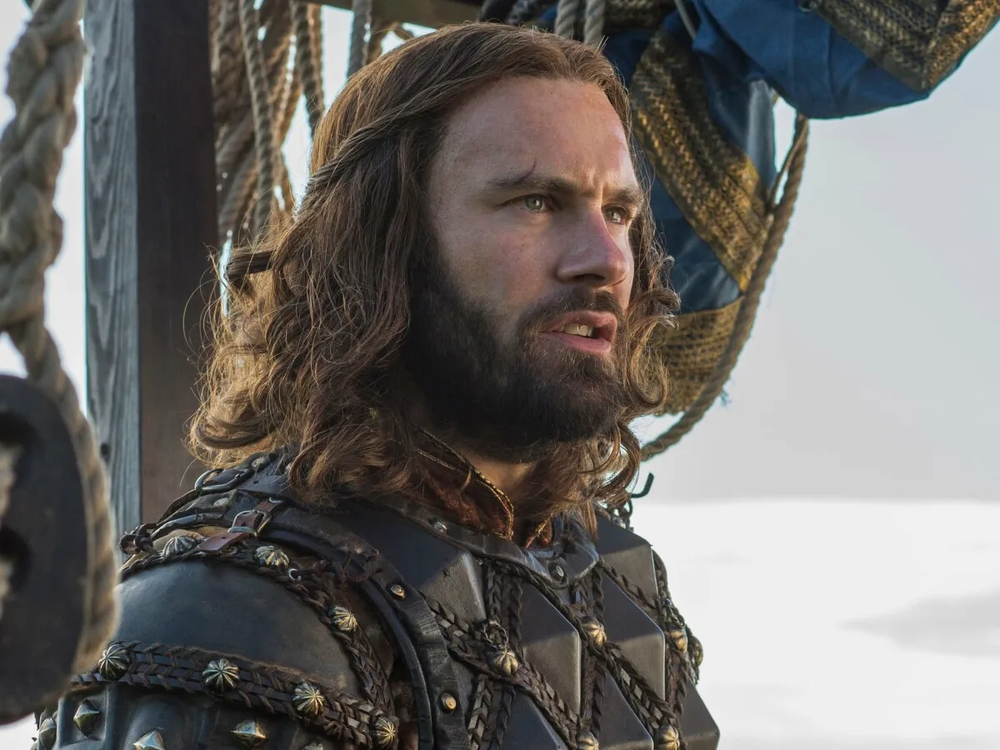
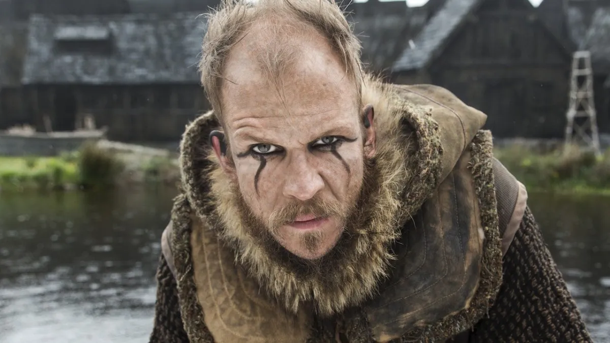

Haz clic en el nombre del personaje
Ragnar
Es el personaje principal de la serie, esposo de Lagertha y padre de Bjorn y Gyda, es un granjero pero tambien es un guerrero que participa en las expediciones de su pueblo. Es inteligente, tranquilo y muy pensativo, tiene muchas ambiciones de viajar y conocer nuevas culturas, aunque eso le traiga problemas con sus superiores.
Lagertha
Esposa de Ragnar y madre de Bjorn y Gyda. Es una escudera que tambien participa de expediciones, atiende siempre a sus hijos, celosa de su marido, caracter muy fuerte, se preocupa por su familia y actua de forma rapida.
Bjorn

Hijo de Ragnar y Lagertha, hermano de Gyda. Bjron al comienzo de la temporada es un niño que esta en camino de convertirse en un gran hombre y guerrero, todos esperan grandes cosas de el, especialmente Ragnar.
Rollo
Hermano de Ragnar. Es uno de los mejores guerreros que participa en las expediciones, su gran fisico y fuerza le da mucha ventaja a la hora de pelear, en un mano a mano nadie le gana, ni siquiera Ragnar. Sin embargo, no es muy inteligente, tiende a alterarse, caracter inestable y eso le juega muy encontra en varias ocasiones.
Floki
Amigo de confianza de Ragnar. Vive en el bosque, es una de las personas mas extrañas de la serie, muy sabio con respecto a los dioses, es constructor de barcos y ademas un guerrero muy leal pero tiene sus gustos peculiares por el fuego.